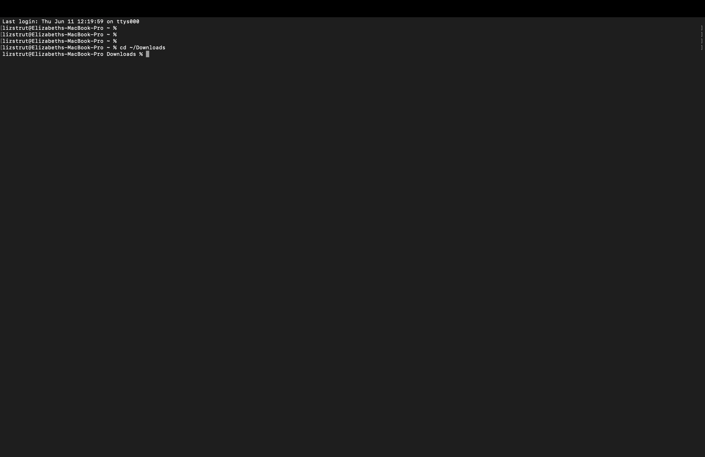

Before we enter tutorial we can talk about how lost passcodes can sometimes be recovered.
According too what I learned and took notes on this weekend, in cybersecurity, there is ways to revoer the mssing code.
Computers can test numbers much much faster then humans can
I completed a cybersecurity challenge involoving a locked PDF. The file was protected by a 4-digit PIN.
So instead of manually guessing every number from 0000 to 9999, I used a simple script and tested possible codes until the correct code was found
That inspired me to create this challenge so other people can have a similar experience
Terminal is an app that lets you control your computer by typing commands. I use a mac, so I open it by searching for Terminal.
The command cd means to change directory. It lets you move stuff into a folder.
cd ~ /Downloads